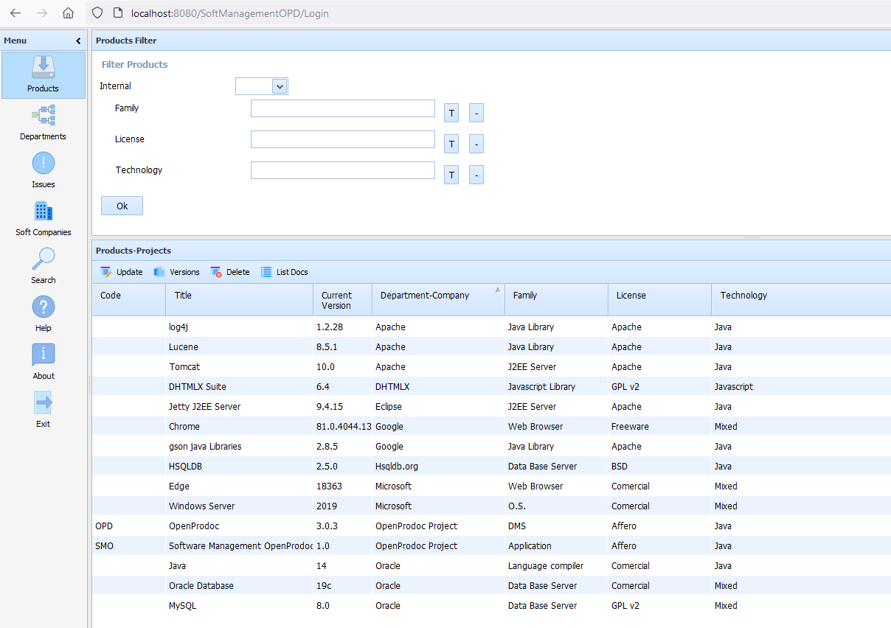
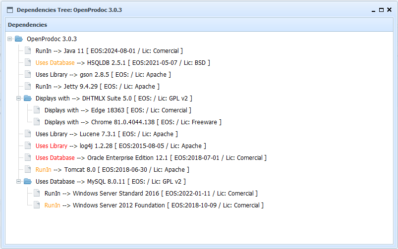
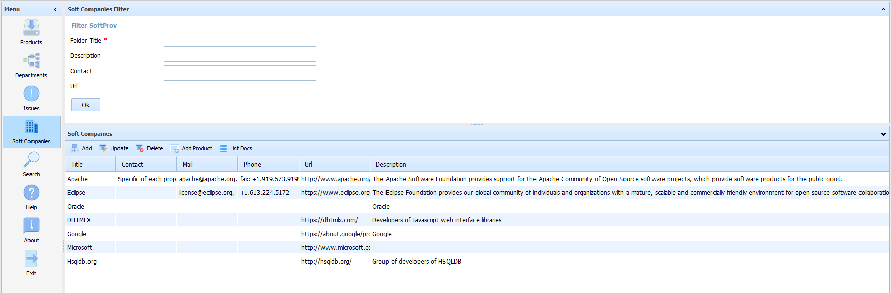
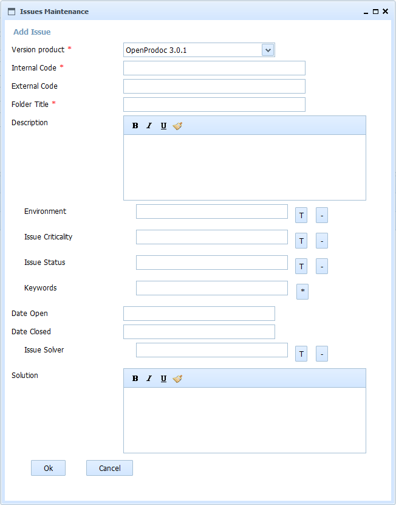

OpenProdoc
 OpenProdoc: Gestor Documental English
OpenProdoc: Gestor Documental English 
Software management for OpenProdoc 1.0
Software Management OpenProdoc (SMO) es una extensión de OpenProdoc que facilita la gestión de documentación relacionada con proyectos de desarrollo para todo el ciclo de vida de un producto, incluyendo desarrollo, gestión, despliegue, obsolescencia e incidencias.

SMO almacena todos los documentos y carpetas en OpenProdoc, así como los tipos de documentos, tipos de carpetas, usuarios, lista de términos y cualquier otro elemento y la configuración, proporcionando solo una interfaz optimizada para administrar toda la información necesaria para desarrollar y usar productos de software. Al ser una interfaz adicional, la mayoría (no todas) las operaciones se pueden realizar desde la interfaz OpenProdoc, siendo ambos sistemas complementarios. SMO se puede configurar en la mayoría de sus elementos.
Una empresa o departamento que utiliza o desarrolla software, desarrollará, o utilizará para desarrollar o desplegar, algunos Productos, cuya responsabilidad residirá en diferentes Departamentos de la empresa, o serán proporcionados por Empresas de Software externas. Durante la vida de los Productos, se desarrollarán e instalarán diferentes Versiones de los mismos. Esas Versiones tendrán problemas, monedas o errores que se pueden gestionar como Issues.
La interfaz SMO tiene 3 áreas principales:
- El menú de la izquierda.
- El área de filtro en la parte superior derecha.
- La lista de elementos filtrados en la parte inferior derecha.
El menú es fijo y siempre muestra los mismos botones:
- Productos: Muestra la lista de productos gestionados, tanto internos como externos (según los filtros seleccionados y los permisos del usuario actual).
- Departamentos: Muestra la lista de departamentos de la empresa (según los filtros seleccionados y los permisos del usuario actual).
- Incidencias: Muestra la lista de incidencias / problemas de los productos (según los filtros seleccionados y los permisos del usuario actual).
- Soft Companies: Muestra la lista de empresas de software o proveedores de productos (según los filtros seleccionados y los permisos del usuario actual).
- Buscar: Muestra un formulario para buscar documentos de cualquier tipo y en cualquier nivel de la estructura de SMO (según los permisos del usuario actual).
- Ayuda: muestra las páginas de ayuda.
- Acerca de: Muestra un formulario con información de las versiones de SMO y OpenProdoc.
- Salir: cierra la sesión en SMO.


